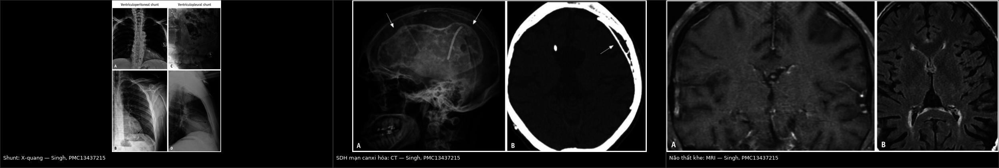
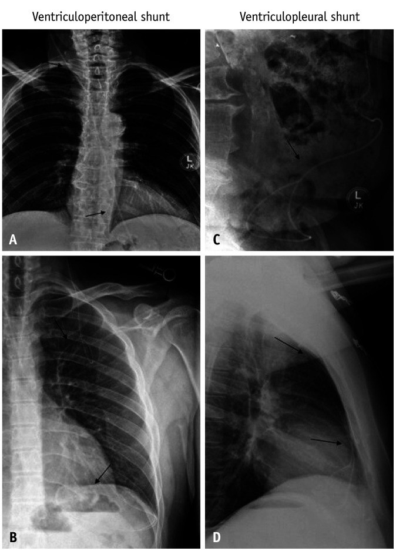
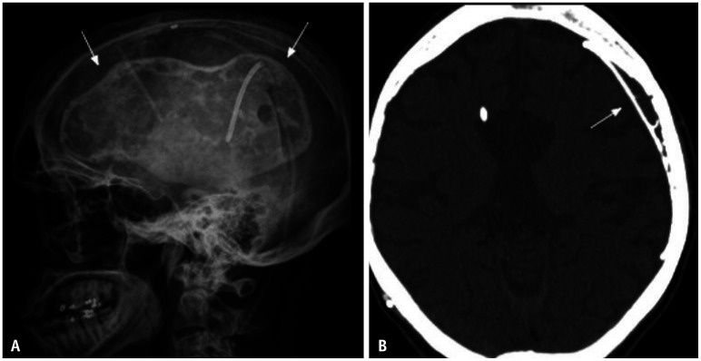
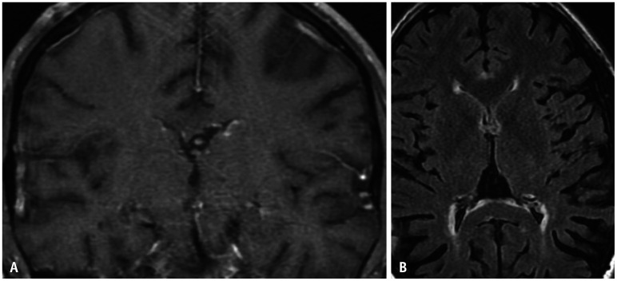

251 — Chấn thương đầu ở trẻ có shunt não thất hoặc rối loạn đông máu: khi nào chụp CT & xử trí / Head trauma in children with a ventricular shunt or a bleeding disorder
Tags: pattern:chan-thuong pattern:tu-mau vung:so-nao vung:shunt score:PECARN protocol:CT-so-nao protocol:shunt-series
Mức chắc chắn (certainty): tổng hợp y văn (literature synthesis) — số liệu lấy từ phân tích phụ đoàn hệ PECARN (98 trẻ có shunt), hướng dẫn Ý 2018 và Scandinavia 2016, đoàn hệ tiên lượng 3.012 trẻ, cùng các tổng quan về đông máu và đảo ngược kháng đông. Không suy diễn ngoài nguồn; chỗ chưa có dữ liệu nhi khoa ghi rõ "chưa rõ".
Bài này chỉ bàn quyết định hình ảnh và xử trí cấp ở trẻ đã có shunt não thất hoặc có rối loạn đông máu/đang dùng thuốc chống đông khi bị chấn thương đầu. Chấn thương sọ não chung ở trẻ ở 224; chấn thương đầu nhẹ – PECARN – theo dõi tại nhà ở 232; tăng áp lực nội sọ và theo dõi đa phương thức ở 234.

Trái: đường đi shunt não thất – não ổ bụng (A, B) và não – màng phổi (C, D) trên X-quang; giữa: máu tụ dưới màng cứng mạn tính canxi hóa ở trẻ có shunt (X-quang sọ A và CT B); phải: não thất khe do dẫn lưu quá mức (MRI T1 A, FLAIR B). Ba hình này là "phông nền" của mọi ca chấn thương đầu có shunt: biết trước thì mới phân biệt được tổn thương mới với tổn thương có sẵn. Nguồn: Singh A et al., Korean J Radiol 2026, PMC13437215, Fig. 2/11/12, CC BY-NC 4.0 (nguyên bản, ghép letterbox).1. Tổng quan bệnh học – cơ chế hình ảnh
- Hai nhóm bệnh nhân khác nhau về sinh lý, nhưng cùng một câu hỏi: trẻ có shunt dẫn lưu dịch não tủy (CSF shunt) và trẻ có rối loạn đông máu (coagulopathy)/đang dùng thuốc chống đông (anticoagulant) đều nằm ngoài vùng bằng chứng của các quy tắc quyết định chụp CT thông thường. Hướng dẫn Scandinavia 2016 ghi rõ: phần lớn nghiên cứu loại trừ trẻ có shunt hoặc bệnh thần kinh nền, và trẻ có rối loạn đông máu không nên cho về ngay từ khoa cấp cứu (PMC4758024).
- Vì sao não có shunt dễ chảy máu hơn (cơ chế):
- Shunt lấy bớt CSF → giảm đối áp (counter-pressure) trong sọ; một khối máu tụ nhỏ có ít mô não "ép ngược" nên có thể lan nhanh hơn — đây là lý thuyết được nêu trong hướng dẫn Scandinavia (PMC4758024).
- Não thường mỏng (thin cortical mantle), khoang dưới màng cứng rộng hơn, tĩnh mạch cầu nối căng → dễ rách khi va đập nhẹ.
- Ống thông và mô xơ quanh đường hầm (catheter tract) là đường vào của máu tụ; catheter còn có thể gãy, ly giãn, di trú sau chấn thương.
- Shunt lập trình (programmable valve) chứa nam châm: từ trường mạnh (MRI 3T) có thể đổi áp lực mở van hoặc làm thiết bị di lệch (PMC13437215) → phải kiểm tra và cài lại sau MRI.
- Dẫn lưu quá mức mạn tính gây hội chứng não thất khe (slit ventricle syndrome, SVS) — khoảng 10% sau 10 năm nếu đặt shunt từ nhỏ; đau đầu/vô tuyến ở trẻ này không đồng nghĩa chấn thương (PMC13437215).
- Vì sao trẻ rối loạn đông máu khác biệt (số liệu):
- Rối loạn đông do chấn thương (trauma-induced coagulopathy, TIC) gặp ở 54,2% (173/319) trẻ chấn thương sọ não trung bình–nặng; định nghĩa theo PACCMAN: tiểu cầu < 100 × 10³/µL, INR > 1,2, hoặc aPTT/PT dài hơn lứa tuổi (PMC13151334).
- Yếu tố nguy cơ độc lập: GCS ≤ 8 (OR 2,98), gãy xương dài (OR 2,6), đụng dập não (OR 1,51); TIC làm tăng tử vong trong viện aHR 12,26 và tử vong 28 ngày aHR 9,52 (PMC13151334).
- Thuốc chống đông ở trẻ đang tăng nhanh: tỉ lệ dùng thuốc ức chế yếu tố Xa tăng từ 0,4% (2009) lên 18,0% (2023) trong một cơ sở dữ liệu; 9,4% trẻ dùng thuốc có biến cố chảy máu liên quan, nhưng ≤ 0,1% được dùng thuốc đảo ngược đặc hiệu (andexanet alfa) (PMC12061172).
- Vì sao hình ảnh đọc được (vật lý):
- Máu tụ cấp trên CT: đông tụ 40–70 HU, máu không đông 30–45 HU — tương phản với nhu mô não 25–35 HU, nên CT không cản quang là phương thức đầu tay và đủ để quyết định mổ.
- Canxi hóa trong máu tụ mạn: > 100 HU, thấy rõ trên cửa sổ xương; đây là dấu có sẵn từ trước, không phải máu mới.
- MRI phân biệt máu ở các giai đoạn (T1/T2 theo hemoglobin) nhưng chậm và khó dung nạp ở trẻ cấp cứu; MRI nhanh (rapid-sequence) hữu ích khi câu hỏi là shunt có hoạt động không, nhờ giảm liều xạ (PMC13437215).
- X-quang "shunt series" (sọ–ngực–bụng) chỉ trả lời thiết bị còn liên tục hay không; nó không thấy máu tụ — vì vậy nghi chấn thương thực thể thì phải CT.
- Ngưỡng quyết định (định lượng):
- Nhóm shunt trong đoàn hệ PECARN: 98/39.732 (0,2%) trẻ GCS ≥ 14 có shunt; CT được dùng 46% vs 35% ở trẻ không shunt; ciTBI 1/98 (1%) vs 346/39.619 (0,9%) — ca duy nhất là máu tụ dưới màng cứng mạn đã biết, TO RA so với CT cũ và phải mổ (PMID 23122954).
- Đoàn hệ thực hành 3.012 trẻ: chỉ 0,9% (27/3.012) có tổn thương đáng kể trên CT, 0,07% (2/3.012) phải mổ; độ nhạy PECARN ≥ 2 tuổi 74,1%, tỉ lệ chụp CT bắt buộc theo quy tắc dao động 1,2%–29,9% (PMC12447897). Trong đoàn hệ này chỉ có 1 trẻ có shunt và 8 trẻ có rối loạn đông — minh họa rằng các quy tắc không đủ dữ liệu cho hai nhóm này.
- Máu tụ dưới màng cứng/hygroma sau đặt shunt mới: ~3% các ca đặt shunt (PMC13437215) → nền dễ có sẵn dịch/máu mạn tính, dễ đọc nhầm là "máu mới".
2. Mẫu hình + chẩn đoán phân biệt theo vị trí và cơ chế (Gamut)
- Ngoài màng cứng (epidural hematoma, EDH): hình thấu kính (biconvex), không vượt đường khớp sọ, thường kèm nứt sọ cùng bên; ở trẻ có shunt, não teo làm khoang ngoài màng cứng rộng nên EDH có thể lớn nhanh mà triệu chứng ban đầu kín đáo.
- Dưới màng cứng cấp (acute subdural hematoma, SDH): hình liềm, vượt đường khớp, có thể dọc theo đường hầm shunt; khi có shunt, một lượng máu nhỏ đã đủ gây dịch chuyển đường giữa vì não ít thể tích dự trữ.
- Dưới màng cứng mạn (chronic SDH): giảm đậm độ/đồng đậm độ, có thể canxi hóa viền; đây là tổn thương có sẵn ở trẻ shunt — chỉ gọi là biến cố khi to hơn trên CT cũ hoặc có triệu chứng mới (đúng như ca duy nhất trong nghiên cứu PECARN, PMID 23122954).
- Máu tụ trong nhu mô/đụng dập (intraparenchymal hemorrhage/contusion): ổ tăng đậm độ trong não, có thể tiến triển trong 24–48 giờ; ở trẻ rối loạn đông, đụng dập là yếu tố nguy cơ TIC độc lập (OR 1,51) (PMC13151334).
- Rối loạn chức năng shunt (shunt malfunction): não thất to ra so với CT nền mới là chốt; nếu không có CT nền, dựa vào giãn bể, phù quanh não thất (transependymal edema), dịch dưới da đầu, phù dọc catheter (PMC13437215).
- Hội chứng não thất khe (SVS): não thất khe/không thấy, đau đầu tư thế; không phải dấu hiệu chấn thương, nhưng là bẫy lớn khi trẻ vào viện vì đau đầu sau ngã.
- Tràn khí nội sọ (pneumocephalus): khí -1.000 HU; sau chấn thương gợi ý rách màng cứng/nứt nền sọ, cần tìm rò CSF (244).
- Máu tụ dọc đường hầm shunt (tract hematoma): dải tăng đậm độ men theo catheter, dễ bỏ sót nếu chỉ đọc nhu mô.
- Gợi nhớ "SHUNT": S – Series X-quang kiểm thiết bị · H – Hematoma (EDH/SDH/tract) · U – Underlying baseline (so CT cũ) · N – Neurosurgery (hội chẩn) · T – Timing (chụp lại nếu đông máu).
3. Bảng so sánh phân biệt (ma trận đối chiếu)
| Thực thể (entity) | Hình ảnh điển hình | Chốt vào (rule-in) | Chốt loại (rule-out) | Gợi ý xác nhận |
|---|---|---|---|---|
| EDH cấp | Thấu kính, tăng đậm độ 40–70 HU, không vượt đường khớp, nứt sọ cùng bên | Hình thấu kính + nứt sọ + xoá bể nền | Hình liềm vượt đường khớp → SDH | CT cửa sổ xương; hội chẩn ngoại thần kinh ngay khi có máu tụ ngoài trục (ngưỡng mổ cụ thể tùy trung tâm, chưa kiểm chứng trong bài này) |
| SDH cấp | Liềm, vượt đường khớp, có thể theo đường hầm shunt | Liềm + vượt khớp + dấu lệch đường giữa | Thấu kính, giới hạn bởi khớp → EDH | CT; so CT nền về kích thước não thất |
| SDH mạn có sẵn (lớn lên) | Giảm/đồng đậm độ, viền canxi > 100 HU, bờ rõ | To hơn CT cũ hoặc triệu chứng mới | Đậm độ như cũ, không thay đổi → không phải biến cố | Bắt buộc so CT cũ; MRI T1/T2 nếu cần phân giai đoạn |
| Shunt malfunction | Não thất to hơn so với nền, phù quanh não thất, giãn bể, dịch dọc catheter | Giãn não thất so với CT nền + triệu chứng tăng áp lực | Não thất không đổi + đau đầu tư thế → SVS/đau đầu nguyên phát | CT so sánh + shunt series; X-quang/CT bụng nếu nghi đầu xa |
| SVS (não thất khe) | Não thất khe, não sát thành sọ, không giãn | Đau đầu tư thế + não thất khe trên MRI | Giãn não thất → malfunction | MRI nhanh; chỉnh van/anti-siphon, không mổ vì "não thất nhỏ" |
| Máu tụ tiến triển do đông máu | Ổ tăng đậm độ to thêm trong 6–24 giờ, có thể nhiều ổ | INR > 1,2 hoặc tiểu cầu < 100 × 10³/µL + tổn thương ban đầu | INR/tiểu cầu bình thường, CT ổn định → theo dõi thường | Xét nghiệm đông máu, chụp lại CT; đảo ngược theo phác đồ |
| Tràn khí nội sọ | Khí -1.000 HU trong khoang dưới nhện/não thất | Khí + nứt nền sọ/xoang | Không khí, chỉ giảm đậm độ → nhiễm mỡ/artifact | CT cửa sổ xương; tìm rò CSF (244) |
Đọc từ trái: (1) shunt não thất — phải biết đường đi để tìm máu tụ dọc catheter và kiểm tra thiết bị; (2) SDH mạn canxi hóa — không gọi là máu mới nếu không to hơn CT cũ; (3) não thất khe — dấu dẫn lưu quá mức, không phải dấu chấn thương. Nguồn: Singh A et al., Korean J Radiol 2026, PMC13437215, CC BY-NC 4.0.
Ba câu hỏi phải trả lời trước khi gọi "chấn thương"
- Có CT nền không? Nếu có, so kích thước não thất, chiều dày máu tụ, mức canxi hóa từng lát.
- Triệu chứng là của chấn thương hay của shunt? Đau đầu tư thế, nôn buổi sáng, li bì, thóp căng → nghĩ shunt trước.
- Đông máu có bình thường không? INR > 1,2 hoặc tiểu cầu < 100 × 10³/µL làm đổi hoàn toàn lịch chụp lại.
4. Protocol: khám → chụp → đảo ngược đông máu → theo dõi
4.1 Trước khi chụp (5 phút quyết định)
- Hỏi bệnh có cấu trúc: loại shunt (VP/VA/VPL/lumboperitoneal), van có lập trình không, lần sửa gần nhất, lần chụp CT gần nhất, thuốc chống đông và liều cuối, bệnh máu (hemophilia, von Willebrand, ITP, suy gan), tiền sử chảy máu kéo dài.
- Khám: GCS theo tuổi, đồng tử, dấu thần kinh khu trú, thóp, sờ dọc đường shunt (bước gãy, khối tụ máu), vết thương da đầu.
- Không áp dụng máy móc PECARN: quy tắc này được xây dựng trên quần thể mà shunt và rối loạn đông chỉ chiếm 0,2% và 0,3% (PMID 23122954; PMC12447897). Hướng dẫn Ý 2018 (KAS 7) cho phép quan sát thay vì CT ngay ở trẻ shunt không có predictor PECARN và không có yếu tố nguy cơ khác — nhưng đây là khuyến cáo mức trung bình, không phải "miễn chụp" (PMC5769508).
- Hướng dẫn Scandinavia 2016: trẻ có shunt không triệu chứng nên quan sát ≥ 6 giờ; trẻ có rối loạn đông/đang chống đông không cho về ngay (PMC4758024).
4.2 Chọn phương thức
- CT sọ không cản quang, lát ≤ 5 mm (1–2 mm qua hố sau/nền sọ khi nghi vỡ): lựa chọn đầu tay khi có cơ chế nặng, GCS < 15, dấu thần kinh khu trú, nôn tái diễn, đau đầu tăng, thóp căng, hoặc rối loạn đông đáng kể. Đọc cả cửa sổ nhu mô và cửa sổ xương — nứt sọ là chốt của EDH và vỡ sọ tiến triển.
- Shunt series (X-quang sọ–ngực–bụng): khi nghi gãy/ly giãn/di trú catheter hoặc sốt – đau bụng; không thay thế CT.
- MRI nhanh (rapid-sequence): khi câu hỏi chính là shunt còn hoạt động hay không, trẻ hợp tác/khoa có protocol, nhằm giảm liều xạ; không dùng để loại trừ máu tụ cấp trong cấp cứu (PMC13437215). Sau MRI, kiểm tra và cài lại van lập trình vì từ trường có thể đổi áp lực mở (PMC13437215).
- Siêu âm qua thóp: chỉ bổ trợ ở nhũ nhi còn thóp, không loại trừ máu tụ ngoại vi.
4.3 Xét nghiệm và ngưỡng đảo ngược (theo bằng chứng hiện có)
- Bắt buộc: công thức máu, INR/PT, aPTT, fibrinogen, nhóm máu; TEG/ROTEM nếu có. Định nghĩa TIC dùng trong nhi: INR > 1,2; tiểu cầu < 100 × 10³/µL hoặc PT/aPTT dài hơn lứa tuổi (PMC13151334).
- Ngưỡng truyền máu (đồng thuận chuyên gia, bằng chứng yếu): hemoglobin đích ≥ 7 g/dL; không truyền huyết tương chỉ vì INR ≤ 1,5 khi đặt dụng cụ đo ICP; tiểu cầu > 100.000/µL có thể có hại ở trẻ thần kinh ổn định, chỉ cân nhắc khi < 100.000/µL và cần đặt dụng cụ ICP ở trẻ đang xấu đi (PMC12839847).
- Đảo ngược theo thuốc: warfarin → vitamin K + phức hợp prothrombin 4 yếu tố (4F-PCC); dabigatran → idarucizumab; apixaban/rivaroxaban → andexanet alfa (nếu có), nếu không → PCC; heparin → protamine; LMWH → protamine chỉ đảo ngược một phần (PMC13600188). Liều theo cân nặng ở trẻ chưa có dữ liệu tiên lượng đủ mạnh — chưa rõ, cần tra phác đồ huyết học nhi của đơn vị, không tự suy từ người lớn.
- Thực tế đáng nhớ: dù thuốc chống đông ở trẻ tăng nhanh, ≤ 0,1% trường hợp chảy máu được dùng thuốc đảo ngược đặc hiệu (PMC12061172) → chuẩn bị sẵn PCC/antidote và gọi huyết học trước khi cần, không chờ kết quả INR.
4.4 Theo dõi và chụp lại
- Quan sát tối thiểu 6 giờ với trẻ shunt không triệu chứng (PMC4758024); nếu có rối loạn đông, nhập viện theo dõi thay vì cho về.
- Chụp lại CT 6–24 giờ khi: tổn thương ban đầu có trên CT, INR > 1,2/tiểu cầu < 100 × 10³/µL, đang dùng chống đông, hoặc tri giác xấu đi. Đây là thực hành dựa trên sinh lý và ý kiến chuyên gia; chưa có RCT ở trẻ — mức suy luận, không phải số liệu từ nguồn.
- Hội chẩn ngoại thần kinh khi: có máu tụ ngoài trục, máu tụ trong nhu mô tiến triển, não thất giãn so với nền, thiết bị gãy/di trú, hoặc trẻ có can thiệp thần kinh trước đó không chỉ là đặt shunt đơn thuần (khuyến cáo Ý KAS 13a, PMC5769508).
- Tiêu chí cho về: GCS bình thường theo tuổi, không nôn tái diễn, CT không tổn thương mới, đông máu bình thường/đã kiểm soát, gia đình hiểu dấu hiệu quay lại, và đã đối chiếu CT nền.
flowchart TD
A["Trẻ chấn thương đầu<br/>có shunt hoặc rối loạn đông"] --> B{"Có dấu hiệu nặng?<br/>GCS dưới 15, đồng tử bất thường,<br/>dấu thần kinh khu trú, thóp căng"}
B -->|Có| C["CT sọ không cản quang<br/>+ xét nghiệm đông máu"]
B -->|Không| D{"Có predictor PECARN<br/>hoặc cơ chế nặng?"}
D -->|Có| C
D -->|Không| E["Quan sát 6 giờ<br/>theo dõi thần kinh"]
E --> F{"Xấu đi trong 6 giờ?"}
F -->|Có| C
F -->|Không| G["Đối chiếu CT nền<br/>và tư vấn dấu hiệu quay lại"]
C --> H{"Có máu tụ hoặc<br/>não thất giãn so với nền?"}
H -->|Không| I["Nếu INR trên 1,2 hoặc<br/>tiểu cầu dưới 100 nghìn<br/>thì chụp lại 6 đến 24 giờ"]
H -->|Có| J["Hội chẩn ngoại thần kinh<br/>đảo ngược đông máu<br/>theo thuốc đang dùng"]
J --> K["Theo dõi ICU<br/>chụp lại theo diễn biến"]
4.5 Khác biệt theo cơ chế (đọc nhanh)
- Shunt + ngã nhẹ, không triệu chứng: bằng chứng hiện có không cho thấy tăng ciTBI (1% vs 0,9%) nhưng tăng gấp đôi tỉ lệ chụp CT (46% vs 35%) → đây là chỗ quan sát có kiểm soát có giá trị nhất (PMID 23122954).
- Shunt + đau đầu/vô tuyến: nghĩ shunt malfunction/SVS trước, so CT nền; đừng gán cho "chấn thương đầu nhẹ".
- Rối loạn đông + CT bình thường lần đầu: không loại trừ chảy máu muộn; theo dõi và chụp lại là điểm khác biệt cốt lõi so với trẻ bình thường.
- Trẻ dùng DOAC: thời gian bán thải ngắn nhưng không có nghĩa an toàn — vẫn cần CT sớm và đảo ngược nếu có máu tụ; dữ liệu nhi còn mỏng (PMC12061172).
5. Biến thể bình thường và cạm bẫy
- SDH mạn canxi hóa có sẵn ở trẻ shunt là biến thể "bình thường" của bệnh nền: viền canxi > 100 HU, bờ rõ, không thay đổi qua nhiều năm — không gọi là máu mới nếu không to hơn (PMC13437215).
- Não thất khe không phải bằng chứng "không có shunt malfunction"; ngược lại, nó là dấu dẫn lưu quá mức và là bẫy khi trẻ đau đầu sau ngã.
- CT bình thường trong 3 giờ đầu ở trẻ rối loạn đông không loại trừ máu tụ tiến triển — cần chụp lại theo lịch.
- Nứt sọ chỉ thấy trên cửa sổ xương: đọc cửa sổ nhu mô đơn thuần dễ bỏ sót EDH/đường vỡ; ở trẻ < 3 tuổi còn phải nghĩ vỡ sọ tiến triển (growing skull fracture) (231).
- Van lập trình và MRI: từ trường có thể đổi áp lực mở van; luôn kiểm tra cài đặt sau MRI, đặc biệt 3T (PMC13437215).
- Shunt series bình thường không loại trừ tắc đầu gần: tắc do đám rối mạch mạc/bùn vẫn có thể xảy ra với ống thông nguyên vẹn.
- Đừng nhầm "não thất nhỏ" với "não phù" ở trẻ shunt: não thất nhỏ + xóa rãnh cuộn não có thể là phù do tăng áp lực, không phải teo.
- Bẫy "satisfaction of search": thấy máu tụ rồi dừng lại — phải xem toàn bộ đường shunt, xoang, nền sọ và so CT cũ.
6. Tự lượng giá — Blind Quiz
Ca 1 — Bé trai 9 tuổi có shunt, ngã đập đầu, đau đầu tăng dần. X-quang định vị thiết bị:

- Câu hỏi: Đây là loại shunt gì? Hình này trả lời được và không trả lời được câu hỏi nào? Bước tiếp theo?
Bấm để hiện đáp án (findings + chẩn đoán)
- Dấu hiệu: (A, B) ống thông từ sọ xuống ổ bụng = shunt não thất–ổ bụng (ventriculoperitoneal); (C, D) ống thông tận cùng trong khoang màng phổi = shunt não thất–màng phổi (ventriculopleural). Mũi tên chỉ đoạn ống thông ở ngực/bụng.
- Trả lời được: loại shunt và tính liên tục của thiết bị (gãy, ly giãn, di trú).
- Không trả lời được: có máu tụ nội sọ hay không, não thất có giãn hay không → phải CT sọ và so CT nền.
- Nguồn: Singh A et al., Korean J Radiol 2026, PMC13437215, Fig. 2, CC BY-NC 4.0.
Ca 2 — Bé gái 7 tuổi có shunt, ngã từ xe đạp, CT sọ được chụp vì đau đầu:

- Câu hỏi: Tổn thương là máu tụ mới hay cũ? Dấu hiệu nào trên ảnh giúp phân biệt? Điều gì quyết định thái độ xử trí?
Bấm để hiện đáp án (findings + chẩn đoán)
- Dấu hiệu: (A) X-quang sọ thấy viền canxi hóa hình liềm; (B) CT axial có dải canxi hóa dưới màng cứng (mũi tên) bên cạnh ống thông shunt — máu tụ dưới màng cứng mạn tính, canxi hóa.
- Phân biệt: canxi hóa > 100 HU, bờ rõ, không phù não xung quanh → có sẵn từ trước; máu cấp sẽ tăng đậm độ 40–70 HU và có thể phù/xóa rãnh.
- Xử trí: so CT cũ; chỉ can thiệp nếu to hơn hoặc có triệu chứng tăng áp lực. Trong đoàn hệ PECARN, ca ciTBI duy nhất ở trẻ shunt chính là kiểu này: SDH mạn to ra và phải mổ (PMID 23122954).
- Nguồn: Singh A et al., Korean J Radiol 2026, PMC13437215, Fig. 11, CC BY-NC 4.0.
Ca 3 — Bé trai 12 tuổi shunt từ nhỏ, đau đầu khi đứng, nôn buổi sáng. MRI sọ:

- Câu hỏi: Mô tả não thất. Đây là shunt tắc hay dẫn lưu quá mức? Cần làm gì tiếp?
Bấm để hiện đáp án (findings + chẩn đoán)
- Dấu hiệu: (A) T1 sau tiêm coronal và (B) FLAIR axial — não thất khe (slit-like), gần như xẹp, không giãn; không thấy phù quanh não thất.
- Chẩn đoán: dẫn lưu quá mức/hội chứng não thất khe (SVS) — không phải tắc shunt. SVS gặp ở ~10% trẻ đặt shunt từ nhỏ sau 10 năm (PMC13437215).
- Xử lý: không mổ vì "não thất nhỏ"; đánh giá van/anti-siphon, cân nhắc chỉnh áp lực, điều trị đau đầu; nếu có triệu chứng tăng áp lực thật thì phải loại trừ tắc đầu gần bằng hình ảnh và áp lực.
- Bẫy: đau đầu sau ngã ở trẻ SVS dễ bị gán cho "chấn thương" — nhưng hình ảnh không có máu tụ.
- Nguồn: Singh A et al., Korean J Radiol 2026, PMC13437215, Fig. 12, CC BY-NC 4.0.
Bài liên quan chéo
- 200 – Tổng quan hệ Thần kinh
- 224 – Chấn thương sọ não ở trẻ
- 232 – Chấn thương đầu nhẹ & PECARN
- 234 – Tăng áp lực nội sọ & theo dõi đa phương thức
- 231 – Tổn thương mạch máu não do chấn thương & vỡ sọ tiến triển
- 244 – Rò dịch não tủy sau chấn thương nền sọ
- 202 – Quy tắc chụp cột sống cổ cấp cứu (NEXUS/Canadian)
Ảnh
images/251_shunt_XR_PMC13437215-Fig2.jpg— X-quang đường đi shunt VP và VPL, CC BY-NC 4.0.images/251_sdh-man-tinh_CT_PMC13437215-Fig11.jpg— X-quang/CT SDH mạn canxi hóa ở trẻ shunt, CC BY-NC 4.0.images/251_slit-ventricle_MRI_PMC13437215-Fig12.jpg— MRI não thất khe, CC BY-NC 4.0.images/composite_shunt-baseline.jpg— ảnh ghép letterbox ba tình huống nền, CC BY-NC 4.0 (nguyên bản, không crop).- Nguồn + giấy phép từng ảnh:
images/CREDITS.md.
Không dùng để chẩn đoán độc lập khi chưa có người hướng dẫn.